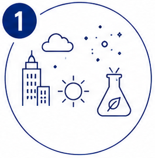
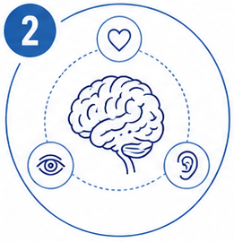
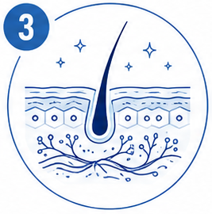
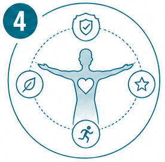
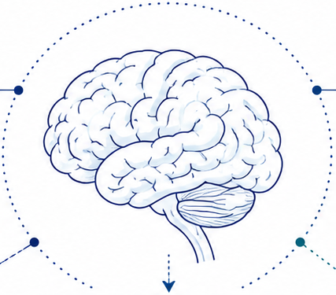
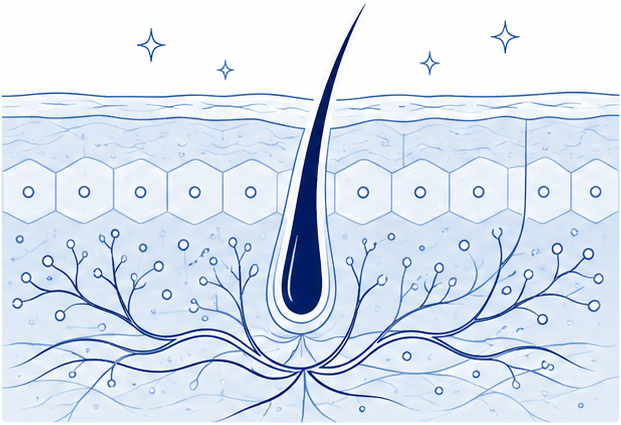
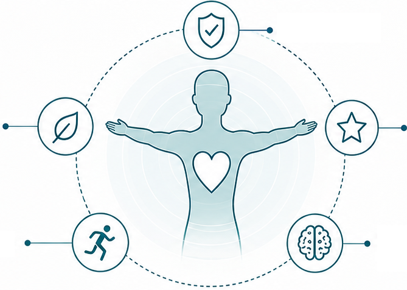

Emotional states influence
neural signaling that
impacts skin function
and perception.
SECTION 1 / HERO OVERVIEW
BEAUTY · HEALTH · WELLBEING
An Integrated Framework Linking Exposure, Brain–Skin Signaling, Neurocosmetics, Health, and Wellbeing
Beauty is shaped by environmental exposures, brain–emotion–sensory processing,
skin biology, and behaviors that shape long-term health and wellbeing.

EXPOSOME FACTORS
External and internal factors
affecting skin health.
BRAIN · EMOTION ·
SENSORY INTEGRATIONBrain interprets signals and regulates
skin through integrated pathways.
NEUROCOSMETIC
BEAUTY SUPPORTScience-guided solutions support
skin function via brain–skin
signaling and skin biology.
HEALTH & WELLBEING
OUTCOMESHealthy skin contributes to confidence,
vitality, and sustainable wellbeing.
SECTION 2 / EXPOSOME FACTORS
EXPOSOME FACTORS
How external and internal exposures shape skin health.
Environmental and lifestyle exposures influence skin biology, impacting barrier function, inflammation,
and long-term beauty, health, and wellbeing.
- 1
AIR POLLUTION
& CHEMICALSParticulate matter and chemical exposures contribute to oxidative stress, inflammation, and barrier damage.
- 2
UV / BLUE LIGHT
& CLIMATEUV radiation, blue light, temperature extremes, and humidity disrupt skin defense and accelerate aging.
- 3
STRESS &
PSYCHOSOCIAL LOADChronic stress and emotional strain dysregulate skin responses and worsen inflammatory pathways.
- 4
POOR
SLEEPInsufficient or poor-quality sleep impairs repair, weakens barrier function, and dulls skin appearance.
- 5
UNHEALTHY DIET &
LIFESTYLE IMBALANCEPoor nutrition, inactivity, smoking, and excess alcohol disrupt skin health and accelerate aging.
- 6
MICROBIOME &
METABOLIC FACTORSMicrobiome imbalance and metabolic dysfunction affect immunity, inflammation, and barrier integrity.
EXPOSURES CAN DISRUPT
THE SKIN BARRIER
From resilient defense
to increased vulnerability.
SECTION 3 / BRAIN–SKIN SIGNALING
BRAIN · EMOTION · SENSORY INTEGRATION
How the brain interprets signals and regulates skin through integrated pathways.

Brain–skin signaling
Neuroendocrine regulation
The brain detects stress
signals and activates
responses that affect
skin physiology.
Sensory inputs from the
environment and body
shape perception and
skin responses.
Integration across senses
(vision, touch, smell, sound)
influences skin sensation
and beauty perception.
Beauty perception and skin function are influenced by sensory–emotional processing
and coordinated brain–body communication.
SECTION 4 / NEUROCOSMETIC SUPPORT
NEUROCOSMETIC BEAUTY SUPPORT
Science-guided support for skin function via brain–skin signaling and skin biology.

HYDRATION
& BALANCESOOTHING &
CALM SUPPORTRADIANCE &
EVEN TONEELASTICITY &
FIRMNESSMICROBIOME &
CROSSTALK SUPPORT
Neurocosmetic strategies support the dialogue between brain signals and skin biology
to help maintain healthy skin function from the inside out.
SECTION 5 / OUTCOMES
HEALTH & WELLBEING OUTCOMES
Healthy skin contributes to confidence, vitality, and sustainable wellbeing.

balanceVitalityLong-term
wellbeing
Healthy skin reflects the integration of biological balance, mental wellbeing, and healthy daily habits—
driving positive self-perception and broader wellbeing outcomes.
SECTION 6 / SCIENTIFIC PRINCIPLES
SCIENTIFIC PRINCIPLES
Core concepts guiding the beauty–health–wellbeing framework.
EXPOSOME
AWARENESSIdentify and reduce
harmful exposures to
protect skin and
overall health.SCIENCE-BASED
APPROACHLeverage rigorous
research, evidence,
and innovation to
deliver effective
solutions.PERSONALIZED
SOLUTIONSTailor strategies to
individual biology,
needs, and
lifestyle.BRAIN–SKIN
UNDERSTANDINGIntegrate neuroscience,
skin biology, and sensory
science to optimize
skin health and
behavior.CONTINUOUS
OPTIMIZATIONMonitor, learn, and refine
based on data and
outcomes for long-term
improvement.